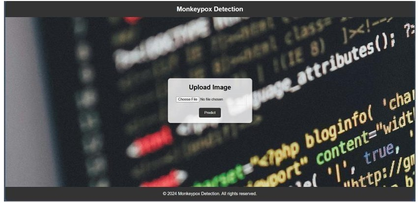

Projects

Urban Sound Pollution Prediction
Java E-Commerce Website

Monkeypox Prediction Using Deep Learning
I’m currently pursuing my B.Tech in Artificial Intelligence and Data Science at LBRCE with a CGPA of 8.7. I have a solid foundation in Java, Python, SQL, and modern web technologies such as HTML, CSS, and JavaScript. I’ve also worked on impactful machine learning and deep learning projects including sound pollution prediction and Monkeypox detection. My internship experiences at NIT Warangal and Bharat Intern helped me lead teams and build full-stack applications and dashboards. I am passionate about solving real-world problems with technology, and I love both individual and team work. Let’s build the future together!
Urban Sound Pollution Prediction
Java E-Commerce Website
Monkeypox Prediction Using Deep Learning
Phone: 6305471128
Email: rajeshvallepu7@gmail.com
LinkedIn: rajeshvallepu21
A detailed overview of my academic journey, technical skills, projects, and internship experiences. Download the full resume to learn more about my qualifications and achievements.
Download Resume